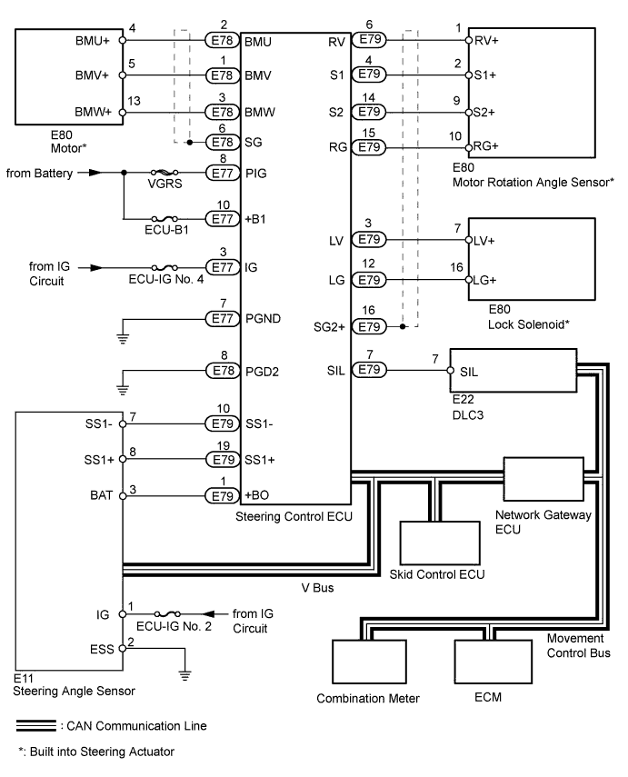

VARIABLE GEAR RATIO STEERING SYSTEM > SYSTEM DIAGRAM |

| Transmitting ECU (Transmitter) | Receiving ECU (Receiver) | Signals | Communication Method |
| Steering Angle Sensor | Steering Control ECU |
| CAN |
| Steering Angle Sensor | Steering Control ECU |
| Serial communication |
| Skid Control ECU | Steering Control ECU |
| CAN |
| Steering Control ECU | Skid Control ECU |
| CAN |
| Steering Control ECU | Combination Meter |
| CAN |